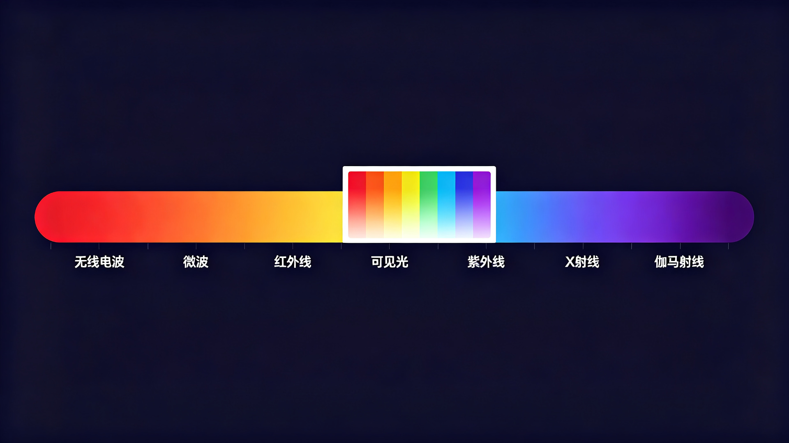

The Tale of Light and Electricity
Light and Electricity: The Two Threads of How We Understand the World
Light sustains life. Photosynthesis turns sunlight into chemical energy and drives the entire biosphere; light is also the universe's most generous messenger — apart from gravitational waves and neutrinos, almost all information from the cosmos arrives by photon. The starlight overhead is a letter sent billions of years ago; radio telescopes receive the whispers of distant galaxies; and what the human eye perceives is only an extremely narrow slice of this endless stream of information.
Electricity is the medium by which humanity harnesses the world. From Franklin's kite to the voltaic pile, from Faraday's electromagnetic induction to generators and power grids, electric current delivers energy to every room; the switching of vacuum tubes and the logic of semiconductors have made electricity the carrier of computation, underpinning the entire information age. If light determines what we can see, electricity determines what we can do and what we can compute.
For a long time, light and electricity were treated as two different things. Not until 1865 did Maxwell unify them in four equations: light is an electromagnetic wave, a disturbance of electric and magnetic fields propagating at the speed of light. Forty years later, Einstein went further: light exists not only as waves but also delivers energy in discrete quanta — E = hν. This equation is the crossroads where light and electricity meet: a photon strikes matter, hands its energy to an electron, and the information carried by light becomes an electrical signal.
The story begins at that crossroads: how light moved from the visible to the invisible, from the continuous to the discrete, and how humanity used these insights to turn the most elusive photons into electrical signals that can be measured, computed, and imaged.
The Boundary of Light: From Visible Light to High-Energy Photons
What the naked eye sees is only a sliver of the spectrum
The human eye can only perceive electromagnetic radiation between roughly 380 and 780 nanometers in wavelength — the band commonly called 'visible light.' This window is not a gift of the universe but a choice of evolution: solar radiation happens to concentrate its energy here, and natural selection aligned the first photoreceptor cells with this band. Humanity calls it 'light' and, over time, has come to believe that light is what we can see.
Yet the true electromagnetic spectrum spans twenty orders of magnitude: from radio waves with wavelengths measured in kilometers, through microwaves, infrared, visible, ultraviolet, and X-rays, to gamma rays with wavelengths of trillionths of a meter. Visible light occupies little more than one octave — a sliver almost invisible within the full spectrum.
The expansion of the spectrum: from infrared to gamma rays
Humanity's knowledge of the spectrum is a history of continuously turning the 'invisible' into the 'visible.' Around 1666, Newton split sunlight into seven colors with a prism, and people first learned that white light contained a rainbow. In 1800, Herschel placed thermometers beyond the red end of the band and found the strongest heating effect in a region where nothing could be seen — thus infrared was discovered; the following year, Ritter used photographic plates beyond the violet end to discover ultraviolet.
At the end of the 19th century, the frontier of the spectrum expanded faster. In 1895, Röntgen discovered X-rays; around 1900, Villard identified a still more penetrating component in the radiation of radium — gamma rays. With that, the electromagnetic spectrum was bridged from one end to the other, and humanity finally understood that 'light' was never merely the small portion the eye can see.

Gamma rays: the most invisible light
At the far end of the spectrum, gamma rays are the highest-energy electromagnetic radiation, conventionally meaning photons with energies above roughly one hundred thousand electron volts. They arise from the most violent processes in the material world: nuclear decay and excitation, the annihilation of positrons and electrons, supernova explosions, and gamma-ray bursts.
One of those sources is bound most deeply to the story that follows: when a positron meets an electron, they annihilate — their mass is entirely converted into energy, producing a pair of photons of exactly 511 keV that fly in nearly opposite directions. These 'twins' carry the location of the annihilation. The entire physical foundation of positron emission tomography (PET) rests upon this pair of photons. And these are precisely the photons that neither the naked eye nor any ordinary lens can ever see directly.
The Revelation of Electricity: Electromagnetic Waves and the Photoelectric Effect
From electric current to electromagnetic waves
The story of electricity accelerated through the 19th century. In 1820, Ørsted found that a current-carrying wire deflects a compass needle — the first proof that electricity and magnetism are connected; in 1831, Faraday discovered electromagnetic induction, showing that a changing magnetic field can produce current — the principle behind motors and generators. Maxwell condensed all of this into four equations and predicted that changing electromagnetic fields propagate as waves at exactly the speed of light. Light is an electromagnetic wave: humanity's first complete answer to the relationship between light and electricity.
Hertz's experiment: confirming electromagnetic waves, stumbling upon the photoelectric effect
In 1887, Hertz caught electromagnetic waves with a spark-gap apparatus, confirming Maxwell's prediction. In the same experiment, he inadvertently stumbled upon another phenomenon: to see the spark at the receiver more clearly, he enclosed the apparatus in a dark box — and the spark grew dimmer. After repeated tests, the truth emerged: ultraviolet light from the sun was 'helping,' striking the metal electrodes and knocking out electrons, making the discharge easier.
This was humanity's first observation of the photoelectric effect: light can directly give birth to electric current. And no one could have predicted that this seemingly minor 'side effect' would become the starting point of all modern photodetection technology.
Three experimental laws and the dilemma of classical physics
Over the following decades, physicists measured the photoelectric effect with increasing precision, yet all three of its laws contradicted classical theory:
According to the wave theory, the energy of light is set by its intensity (amplitude); intense enough light should always eject electrons, while weak light should 'store up' energy before releasing it. The experiment and theory disagreed so completely that the finest physicists of the age were collectively silenced. This problem would lead to the most famous debate in the history of science — the story of the next chapter.

The photoelectric effect: the foundation of every photodetector
For today's researchers, the significance of the photoelectric effect cannot be overstated: almost every photodetector is built upon it. The photocathode of a photomultiplier tube uses the 'external photoelectric effect' to convert a photon into an electron; the avalanche diodes of a silicon photomultiplier use the 'internal photoelectric effect' to excite electron-hole pairs in a semiconductor and then amplify them by Geiger avalanche. One could even say that humanity's ability to 'see' any invisible light today rests on the rule Einstein wrote down in 1905.
The Great Debate: What Is Light?
A three-hundred-year battle: particle theory versus wave theory
What is light? This is the first great question physics ever asked.
Newton thought light was made of particles. In Opticks (1704), he described light as small particles flying at high speed; rectilinear propagation, reflection, and refraction all followed naturally, and Newton's authority kept the particle theory dominant for nearly a century. His contemporary Huygens argued that light is a wave (Treatise on Light, 1690), but could not explain why light travels in straight lines, and was long suppressed — physicists of that time did not yet know that when a wavelength is short enough, wave propagation looks exactly like a straight line.
The turning point came at the beginning of the 19th century. Thomas Young sent a beam of light through two slits, and the screen showed alternating bright and dark fringes: two wave trains superimposing, peaks reinforcing peaks and peaks canceling troughs. Only waves can interfere; particles cannot. In 1818, Fresnel used wave theory to predict a strange phenomenon — after light bends around a disk, a bright spot should appear at the very center of the shadow. Poisson, an opponent, 'proved' mathematically that this prediction was absurd, hoping to refute wave theory. But Arago actually ran the experiment, and the bright spot appeared. The 'Poisson spot,' named after its opponent, became the most elegant victory of the wave theory.
In 1865, Maxwell unified electricity and magnetism in four equations, predicting that changing electromagnetic fields propagate as waves at exactly the speed of light — light is an electromagnetic wave. In 1887, Hertz captured these waves experimentally. By the end of the 19th century, the wave theory looked like the final answer. Who dared to say that light is not a wave?
The photoelectric effect: a fatal examination question for a perfect theory
In the same year that Hertz verified electromagnetic waves, he ran into a 'small annoyance': to see the receiving spark more clearly, he placed the apparatus in a dark box — and the spark grew dimmer. Repeated tests revealed the truth: ultraviolet light from the sun was 'helping,' striking the metal electrodes and knocking out electrons, making discharge easier.
This was humanity's first observation of the photoelectric effect: light can give birth to electric current.
Over the following decades, the experimental laws became clearer — and ever more distressing for physicists: every metal has a cutoff frequency; light below it, however intense, cannot eject electrons; the kinetic energy of ejected electrons is independent of intensity and depends only on frequency; electrons appear the instant light strikes, with no delay.
The wave theory failed all three predictions. According to wave theory, light energy is set by intensity, so intense light should always eject electrons; weak light should 'accumulate' energy and release it when enough has been stored. The experiment said the opposite: the brightest red light does nothing, while the faintest ultraviolet triggers instantly.
This was not a wrong experiment; it was a wrong theoretical framework. For the first time, physics was collectively speechless before 'light' — no one could explain the contradiction. It was an examination question placed before all of classical physics.
Einstein's light quanta: challenging the 'continuous' with the 'discontinuous'
In 1905, a minor clerk at the Bern patent office in Switzerland gave the answer in the third paper of his 'miracle year': light is not an infinitely divisible continuous wave but comes in discrete 'quanta,' each carrying an energy set by frequency — E = hν. The higher the frequency, the larger each quantum.
The question was solved at once: if the frequency is too low, no number of photons can open the door of the electron; if the frequency is high enough, one photon knocks out one electron, and the excess energy becomes the electron's kinetic energy; the collision is instantaneous, requiring no accumulation. The failure of red light and the success of violet light are two faces of the same thing.
But the scientific establishment did not buy it. The light-quantum hypothesis was seen by many as a 'regression' — how could three hundred years of wave theory's hard-won status be overturned by a hypothesis? The most telling example is Millikan. The future Nobel laureate spent a full ten years on photoelectric experiments, intending to refute Einstein's photoelectric equation with precise data. His measurements fit E = hν perfectly — the theory he wanted to falsify was confirmed by his own hands. Even so, he stubbornly wrote in his paper: the equation is verified, but 'the light-quantum hypothesis itself... remains doubtful.'
Not until 1923 did Compton let X-rays strike electrons and observe scattering that looked exactly like a collision between two billiard balls — light carries momentum; it hits, and the electron recoils. The particle nature of the light quantum finally had irrefutable hard evidence.
Everyone who works on detection should remember this history: theories are not defeated by argument but judged by evidence; and accepting a new theory often takes a generation. Millikan's ambivalence was not foolishness — it was a scientist at his most honest.
Wave-particle duality: Bohr's reconciliation
Light is both wave and particle? In classical logic that is a contradiction.
In 1924, de Broglie pushed the contradiction further: not only is light a wave, electrons are waves too. Schrödinger then wrote the wave equation, and Born gave the probabilistic interpretation — the wave function does not describe 'where the light is' but 'how probable it is to be there.'
Confronted with this counterintuitive world, Bohr proposed the complementarity principle in 1927: wave and particle are not two contradictory faces but two complementary descriptions of the same reality. Ask with an interferometer, and light answers that it is a wave; ask with a photodetector, and light answers that it is a particle. The experimental apparatus decides which face you see.
This marked a turn in epistemology: the question of physics shifted quietly from 'what is light, in itself' (ontology) to 'what can we actually measure' (epistemology). Measurement itself participates in the definition of reality. For detector researchers, this statement has a very concrete meaning: the photoelectric effect is the bridge connecting the 'world of waves' with the 'world of particles' — no matter what guise light arrives in, it must become an electron in the detector before it can be readable information.
'Does God play dice?' The century-long debate between Einstein and Bohr
The question of light was solved; a deeper debate began.
In 1927, at the Fifth Solvay Conference, the most illustrious gathering in the history of physics assembled in Brussels. Einstein refused to accept the probabilistic nature of quantum mechanics and uttered his famous line: 'God does not play dice.' Bohr retorted: 'Stop telling God what to do.'
Over the next decade and more, the two men sparred with thought experiments. Einstein designed a 'photon box,' trying to overthrow the uncertainty relation with relativistic time dilation; Bohr finally rebutted him using Einstein's own general relativity — the escaping photon shifts the box in the gravitational field, and the time measurement becomes blurred instead. In 1935, Einstein, Podolsky, and Rosen published the EPR paper, questioning the completeness of quantum mechanics with 'spooky action at a distance.'
The substance of the debate was the century-old confrontation between determinism and probability, realism and positivism: is the universe fundamentally determinate and objective, or can it only be described by probabilities?
The debate had no loser — it has not even ended. In 1964, Bell turned this philosophical dispute into a testable inequality; in 2022, the Nobel Prize in Physics was awarded for entangled-photon experiments, and the predictions of quantum mechanics were once again precisely confirmed. The debate itself gave birth to quantum information, quantum computing, and quantum communication — the disagreement of philosophers grew into the tools of engineers.
The visible and the invisible: the boundary of the senses and the extension of instruments
Return to an earlier question: why does it seem that 'not seeing' means 'not existing'?
Because the human eye covers only 380 to 780 nanometers — precisely the window where solar radiation is strongest, the trade-off natural selection made for us over hundreds of millions of years. The visible is not the boundary of the universe; it is the boundary of the senses.
For three hundred years, humanity has been widening that boundary with instruments: Herschel 'saw' infrared with a thermometer, Ritter 'saw' ultraviolet with photographic plates, Röntgen 'saw' X-rays with a fluorescent screen. Every revolution in instrumentation has redefined what is 'visible.'
At the far end of the spectrum lies gamma radiation — the highest-energy light. It comes from nuclear decay, the annihilation of positrons and electrons, and supernova explosions. It is extraordinarily penetrating; neither the naked eye nor any lens can touch it, yet it is the carrier of the deepest information about matter: every flip of an atomic nucleus, the metabolic activity of every cancer cell in the body, the most violent explosions in the universe — all speak outward in the form of gamma photons.
To make this most invisible light speak requires an organ far more complex than an 'eye': a scintillation crystal to stop the photons, a photodetector to turn light into electrons, and circuits to turn electrons into digits. The working principle of this organ is precisely the rule Einstein wrote down with E = hν.
This is the tale of light and electricity: from the arguments of philosophers to the instruments of engineers, humanity has used three hundred years to turn the most invisible light into the clearest electrical signals.
Exploring the Scientific Frontier: From the Photoelectric Effect to Photon Detection
Why gamma photons cannot be 'seen' directly
There are two fundamental routes in photon detection. For low-energy photons such as infrared, visible, and ultraviolet light, a semiconductor can directly absorb a photon, excite an electron-hole pair, and produce a current — this is how the sensor of a digital camera works. But for gamma rays, this route fails: a 511 keV photon has far more energy than any semiconductor band gap; it is extremely penetrating, its interaction cross section with detector material is very small, and direct conversion is hopelessly inefficient; the energy it deposits can also 'punch through' ordinary circuits, making fine measurement impossible.
Detector scientists therefore took a different route: first make the gamma photon 'stop,' convert it into easier-to-handle visible light, then measure it electronically. This is scintillation detection — a complete chain that turns light into electricity, the invisible into the visible, and energy into data.
First, the 'external photoelectric effect' explained by Einstein: a photon knocks an electron out of the surface of a material — the working principle of photocathodes and photomultiplier tubes. Second, 'photoelectric absorption' in the interaction of photons with matter: a gamma photon is completely absorbed by an atom, ejecting an inner-shell electron — one interaction mechanism in gamma detection. The names are similar but the levels differ. In scintillation detection, a gamma photon first hands its energy to the crystal through photoelectric absorption or Compton scattering; the crystal then emits visible light, and the visible light is turned into electrons by the external or internal photoelectric effect — on a single chain, two 'photoelectric effects' each do their own job.
Scintillation detectors: making photons stop
The history of scintillation detection reaches back to the beginning of the 20th century. Rutherford's students used zinc sulfide screens in dark rooms to count faint flashes of light — humanity's first attempt to 'count' invisible particles with 'light.' What turned this craft into an instrument science was the maturation of two things: high-performance scintillation crystals and photomultiplier tubes.
The job of a scintillation crystal is to convert the energy of a gamma photon efficiently into visible light. The LYSO (lutetium yttrium oxyorthosilicate) crystal widely used in today's PET detectors has high density, a large atomic number, and fast, high-yield scintillation: a single absorbed 511 keV photon can excite tens of thousands of blue-violet visible photons inside the crystal. When these photons fly out of the crystal, they carry all the information that 'a gamma ray was here.'
Around the 1930s, the photomultiplier tube appeared, and humanity gained, for the first time, the ability to amplify single-photon-level faint flashes into measurable electrical pulses. Its photocathode converts photons into electrons, and dynode stages multiply them step by step: one photon can ultimately become a million electrons — a signal so faint it barely exists is amplified by a factor of 100,000 to 1,000,000. From then on, 'counting photons' became a reliable engineering task.

From photomultiplier tubes to silicon photomultipliers
After half a century of photomultiplier dominance, semiconductor devices opened new possibilities. A silicon photomultiplier (SiPM) integrates tens of thousands of avalanche diodes operating in Geiger mode on a single chip; a single photon can trigger an avalanche, with gain up to a million. It is compact, operates at low voltage, is immune to magnetic fields, and is easy to integrate at scale — an ideal partner for next-generation detectors and all-digital readout schemes.
For PET, a detector must answer three questions: when did the photon arrive (time), how much energy did it deposit (energy), and where did it strike (position). Time resolution determines whether time-of-flight (TOF) information can narrow the localization range, energy resolution determines whether the energy window can reject scattered events, and position resolution determines image detail. The answers to all three depend on the entire chain from scintillation crystal to photoelectric conversion to electronics.
| Dimension | Direct photoelectric detection | Scintillation indirect detection |
|---|---|---|
| Applicable photons | Infrared, visible, ultraviolet (eV scale) | X-rays, gamma rays (keV–MeV scale) |
| Conversion principle | Semiconductor directly absorbs photons, exciting electron-hole pairs | Crystal first converts photons into visible light, then photoelectric conversion |
| Typical devices | Photodiodes, CCDs, CMOS image sensors | Scintillation crystals + photomultiplier tubes / silicon photomultipliers |
| Typical applications | Cameras, spectroscopy, low-energy light measurement | PET imaging, radiation monitoring, gamma-ray astronomy |
All-digital PET: from electrical pulses to data
Traditional analog-digital hybrid PET amplifies, shapes, integrates, or discriminates pulses in the analog front end, compressing nanosecond-scale raw signals into a few features. This approach is mature and reliable, but it discards a great deal of information before entering the computer: once shaping parameters, thresholds, or coincidence rules are fixed, what remains is a processed result, not a complete measurement.
All-digital PET changes this. The multi-voltage threshold (MVT) sampling proposed by the Digital PET Laboratory no longer asks 'what is the voltage now' at uniform clock intervals; instead, it records when a pulse crosses multiple voltage thresholds, and then uses pulse models to recover time, energy, and waveform. Scintillation pulses are precisely digitized at their source, and subsequent parameter estimation, coincidence selection, correction, and reconstruction are performed as much as possible by digital systems and software — raw information is preserved, traceable, and reprocessable.
The end point of this chain is to turn every annihilation event into computable data: the 511 keV photon from positron annihilation is absorbed by the crystal and becomes a flicker of visible fluorescence; the fluorescence is turned into a current pulse by the photodetector; the pulse is digitized into rows of time and energy records; reconstruction algorithms turn those records into images before a physician's or scientist's eyes. From the most invisible light to the clearest image, the whole journey rests on the photoelectric effect discovered a century ago.
Further frontiers
The same chain extends into wider territories. In proton therapy, proton beams interacting with tissue produce positron-emitting radionuclides; In-beam PET placed close to the treatment beamline uses annihilation photons to verify the range online, providing feedback for precision radiotherapy. In space science, the Fermi satellite's large-area telescope uses silicon microstrip detectors to convert gamma photons into electron-hole pairs, scanning the most violent explosions in the universe. In nuclear radiation monitoring, security screening, and oil well logging, scintillation detection with digital readout likewise turns invisible rays into readable information.
- Around 1666: Newton splits white light with a prism; the visible spectrum is established;
- 1800–1801: Herschel discovers infrared; Ritter discovers ultraviolet;
- 1865: Maxwell establishes electromagnetic theory, predicting light is an electromagnetic wave;
- 1887: Hertz verifies electromagnetic waves and first observes the photoelectric effect;
- Around 1900: Villard discovers gamma rays;
- 1905: Einstein proposes the light-quantum hypothesis; E = hν explains the photoelectric effect;
- 1916: Millikan verifies the photoelectric equation with precise experiments;
- 1923: The Compton effect confirms the particle nature of light quanta;
- 1930s: The photomultiplier tube appears; single-photon amplification becomes possible;
- 1948: NaI(Tl) scintillation crystals appear; scintillation detection matures;
- 1990s: LSO/LYSO crystals and time-of-flight PET develop;
- 2000s: Silicon photomultipliers (SiPMs) become practical;
- From 2004: The all-digital PET concept and MVT digitization method are proposed; scintillation pulses are digitized at the source.
The Tale of Light and Electricity Continues
Look back along this thread: a prism, a thermometer, a spark in a dark box, a manuscript from a patent office... Humanity used three hundred years to turn 'what is light' from a philosophical question into an engineering instrument; and another century to turn the most invisible light — gamma photons — into the clearest images.
At the Digital PET Laboratory, this chain continues to extend deeper: faster scintillation crystals, finer time resolution, digitization that stays closer to the physics, and single-photon-level sensitivity. The wave-particle debate over light may seem settled, but the pursuit of smaller, faster, and weaker signals has never stopped.